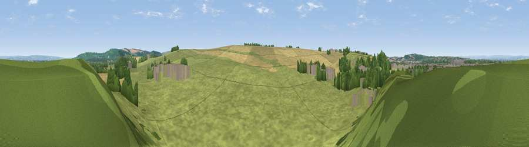

Viewpoint near Norton-on-Derwent
#25651 in England · top 50% of its area beats it · near Norton-on-DerwentWhere it is
The exact computed spot (SE 80325 70125). Click the marker for map links.
The view, rendered

A 360° render of this exact spot computed from the terrain model, tree cover and land cover — summer colours, afternoon light, calibrated against photographs of famous viewpoints. Real trees, hedges and buildings will differ in detail.
The panorama
Grey silhouette: terrain skyline in each direction (720 bearings, Earth curvature and refraction included). Dashed green: skyline with trees (+15 m) and buildings (+8 m) as obstacles. Blue strip: how far the ground is visible on each bearing.
Where the view opens
Wedge length = distance to the farthest visible ground on that bearing (vegetation-aware). Rings at 10, 25 and 50 km.
What fills the view
57% grassland · 32% cropland · 6% woodland · 5% built-up
Angular shares of the visible panorama (visual magnitude), not map area. Landscape diversity 0.43 (0–1 Shannon).
Key numbers
More beautiful places nearby
The staircase of upgrades: each row has a higher view potential than everything closer. Driving times are estimates from straight-line distance, calibrated against real road routing — check an actual route before setting out.
| Place | Direction | Drive | Score |
|---|---|---|---|
| Viewpoint near Settrington | E · 4 km | ~10 min | 69.5 |
| Viewpoint near Scagglethorpe | ENE · 5 km | ~11 min | 70.2 |
| Viewpoint near Settrington | ENE · 5 km | ~11 min | 72.3 |
| Viewpoint near Leavening | S · 8 km | ~16 min | 73.7 |
| Viewpoint near Acklam | S · 9 km | ~18 min | 73.8 |
| Viewpoint near Ampleforth | WNW · 22 km | ~37 min | 76.6 |
| Seamer Beacon | NE · 27 km | ~43 min | 76.9 |
| Viewpoint near Burniston | NE · 29 km | ~46 min | 78.3 |
54.12072, -0.77253 · source: screening · position refined by local search. Computed location — check access rights before visiting.